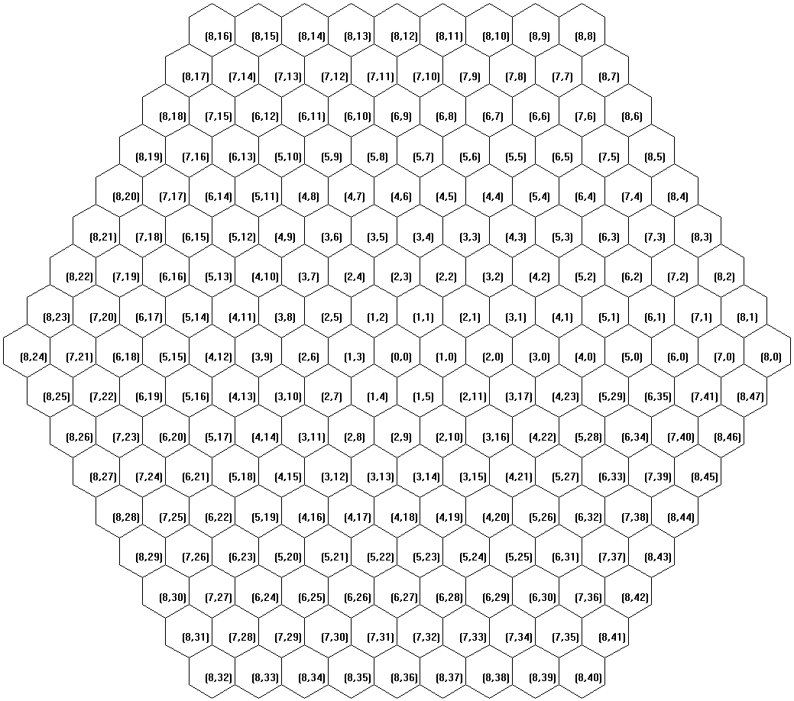
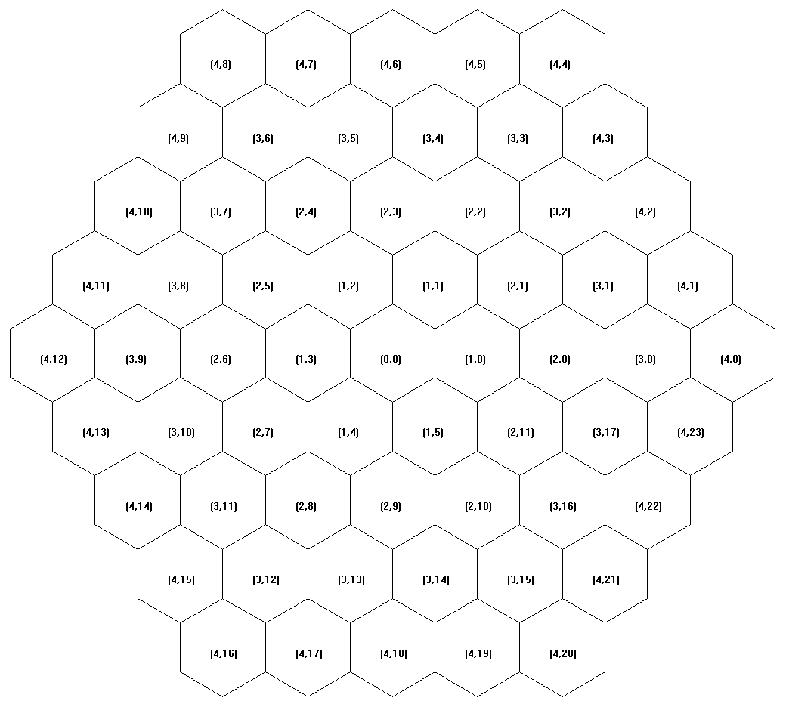

Current use is hosting non-code and/or copyright-restricted resources
Please note that each file has its own copyright rule
目前用于存放非源代码和/或版权受限的资源
请注意每一个文件都有自己的版权规则
medium5game resources archive
resources-0.1.0.zip
Resource files (images/fonts) for medium5game project.
License: see LICENSE.md in the archive
lua5.3 for Winows
lua5.3.exe
liblua.dll
Lua5.3 interpreter, Windows x64 executable file. built with Lua5.3 source code and Windows SDK 10.0.22000.0
Lua License (MIT)
lua_platform.so
lua_platform.dll
Lua library to provide basic platform opeations such as listing files, sleeping etc. Built with MinGW.
License: MIT
hexagon maps


Hexagon map, scale = 8/4, with polar coordinate in every cell. Generated using LuaCanvas
License: CC-BY